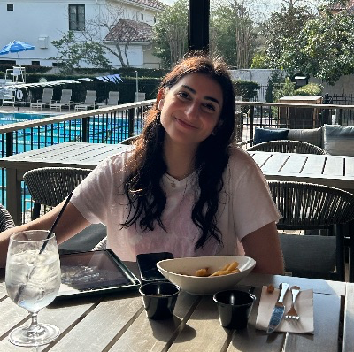

Hello, my name is Zahra Hussain! I am a first-year Software Engineering student at the University of Guelph, with a strong interest in software development. Although I have always been drawn to the sciences, near the end of high school I realized that my true passion lies in tech and software development. This shift has opened up a new chapter of growth and learning in my life, and I am eager to dive deeper into this field as I continue to explore its endless possibilities.
Throughout my time in high school, I took many computer science courses, where I developed a strong foundation in programming, problem-solving, and logical thinking. These experiences helped me build strong technical skills and sparked my interest in software development. Recently, artificial intelligence (AI) has gained my interest and I want to explore more about this field and possibly pursue a career in it. I am excited to learn more about software development and artificial intelligence and one day contribute to the advancements in AI and machine learning.
As a first year student, I am learning a lot through my academics, exploring new places, and trying new things. Since starting university, I have joined many clubs and intramural sports, which keep me busy along with my school work. One of the clubs I joined is the Guelph Women In Computer Science (GWICS). My favourite event was GoCodeGirl where I was able to mentor girls from middle school and high school through different coding challenges. I think it was a fun way to promote and introduce coding to younger students. Beyond academics, I try to stay active, whether it’s strength training at the gym, or playing intramural sports such as basketball, ultimate frisbee, and soccer. I enjoy a physical challenge and thrive when working in a team. Another passion of mine is working on cars, from routine maintenance to bigger mechanical projects. Overall, I find it very rewarding to work through challenges and problem solve in both software and engineering.
University: University of Guelph
Location: Guelph, ON
Email: zhussa03@uoguelph.ca
GitHub
LinkedIn
Software Development
Machine Learning
Cyber Security
User Experience
Software Engineering
Data Analysis
Web Development
Artificial Intelligence